咋们的石大
石河子大学位于被誉为戈壁明珠的新疆石河子市，是国家 “211工程”重点大学，是“中西部高校综合实力提升工程”（一省一校）高校和“中西部高校基础能力建设工程”高校，入选“2011计划”、"卓越医生教育培养计划"、"卓越工程师教育培养计划"、"卓越农林人才教育培养计划"，由教育部和新疆生产建设兵团共建，是国家西部重点建设十四所高校之一，“中西部高校联盟”成员。 学校现有经济、法、教育、文、历史、理、工、农、医、管理、艺术等11大学科门类。拥有5个一级学科博士学位授权点，涵盖25个二级学科博士学位授权点；23个一级学科硕士学位授权点，144个相关二级学科硕士学位授权点；9种硕士专业学位授权类别，84个本科专业，4个博士后流动站（科研工作站）。 截至2015年3月5日，石河子大学校园面积182万平方米，校舍面积117万平方米，实验室面积15万平方米，绿化覆盖率43%。图书馆馆藏中、外文书刊300万余册。学校设有国家大学生文化素质教育基地、校外实践教育基地。面向全国31个省（市、区）招生，现有在校生40185人，其中普通本专科生22576人，国防生485人，硕士、博士研究生3735人。学校本科毕业生就业率连续多年保持在90%以上。 ------《百度百科》
标志

 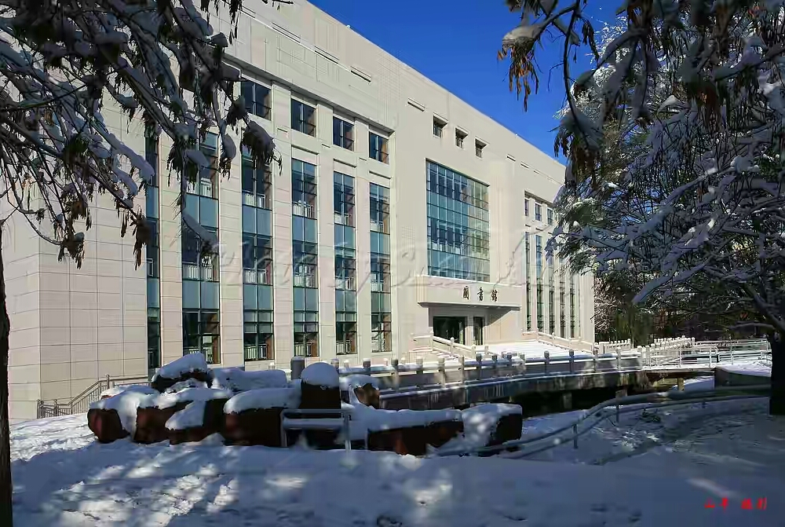 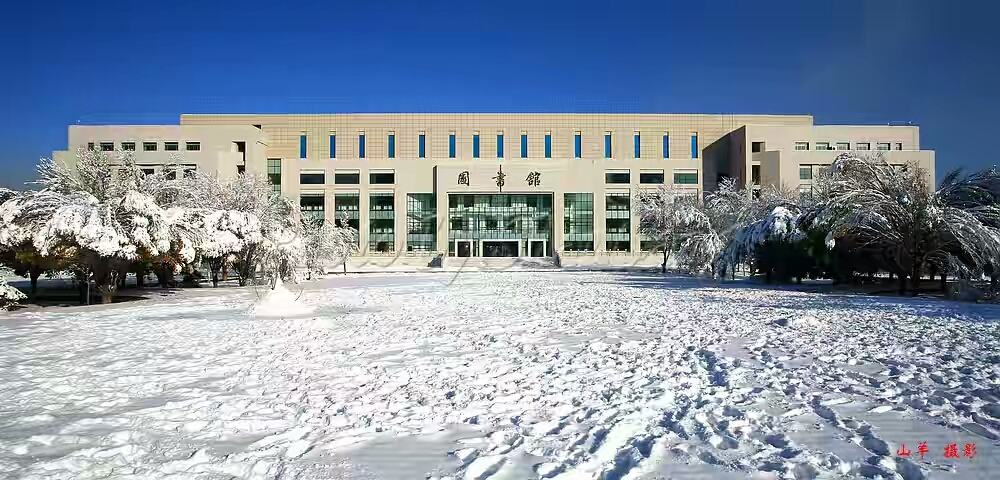
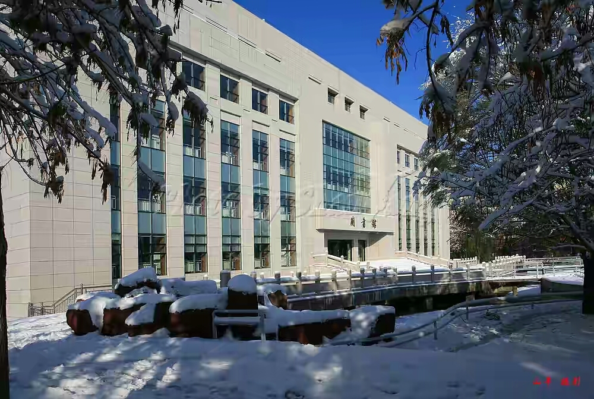 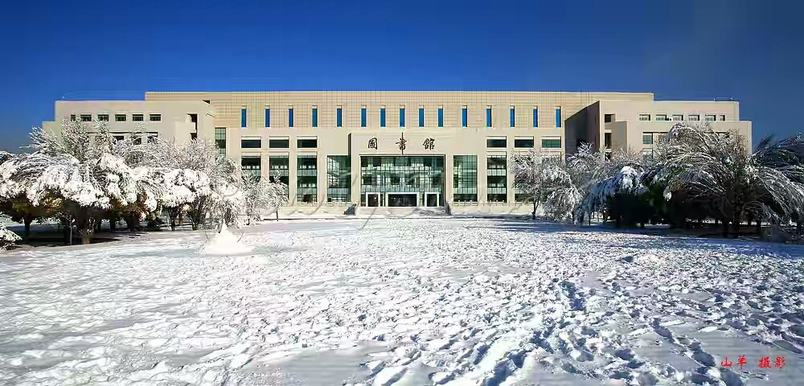
咋们的田径场
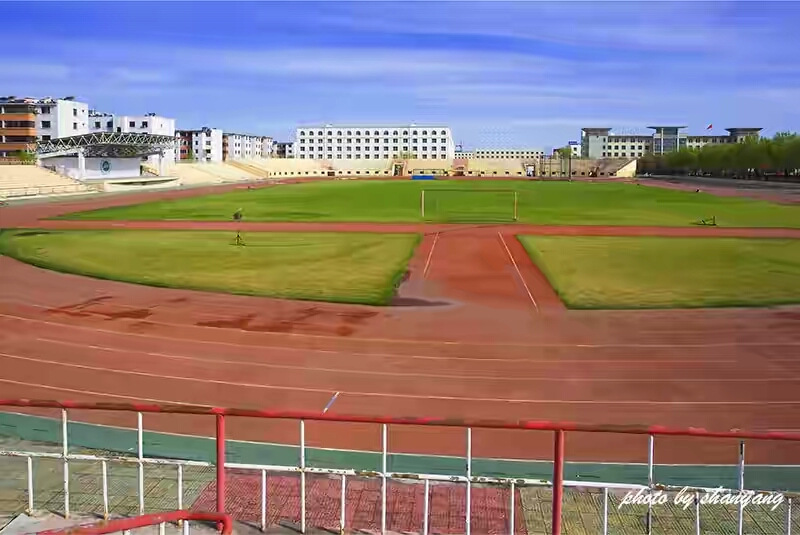 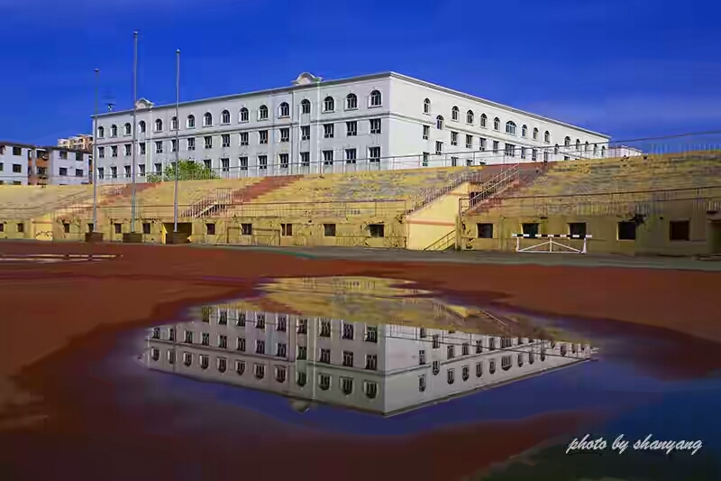 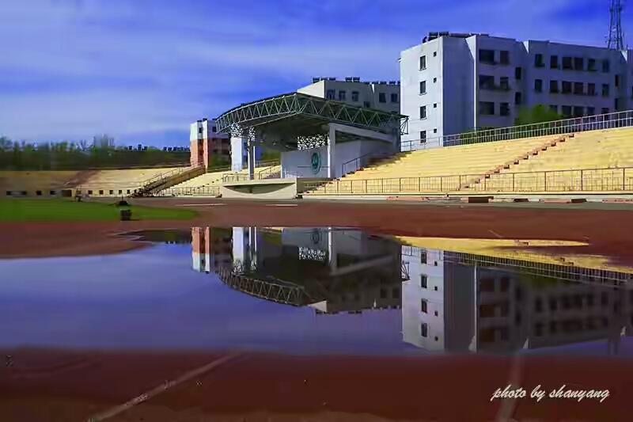
咋们学校其他美景
 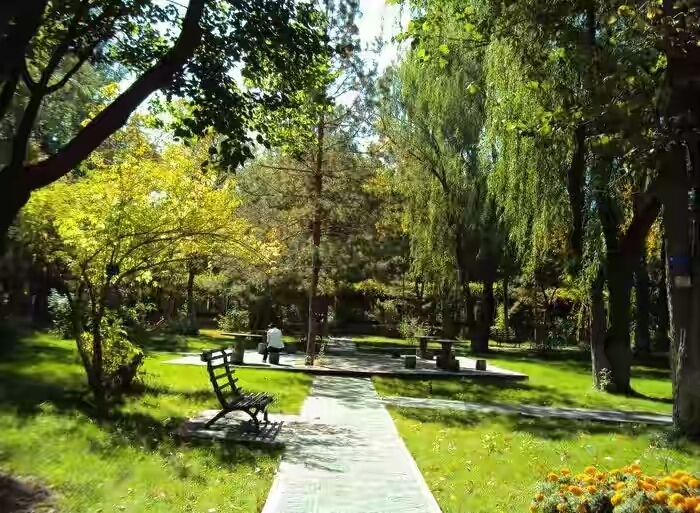 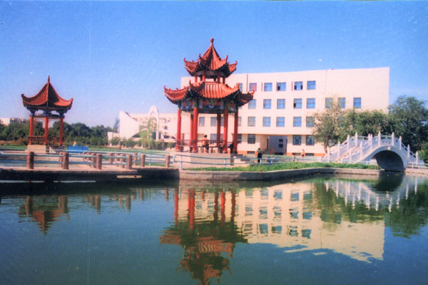
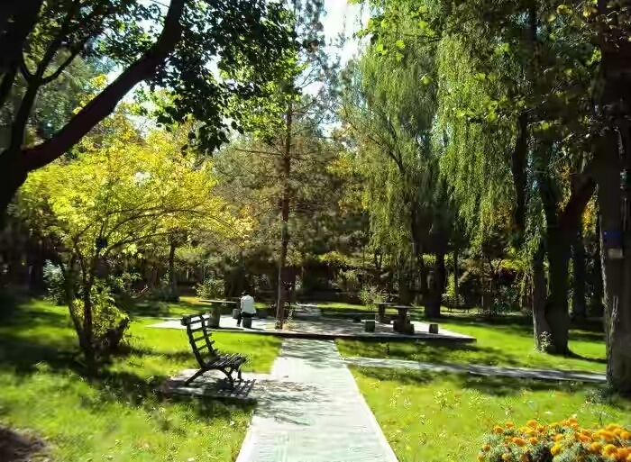 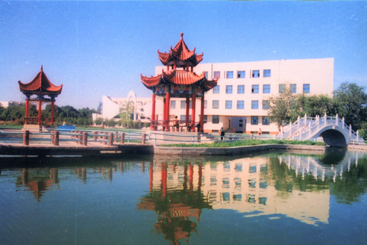
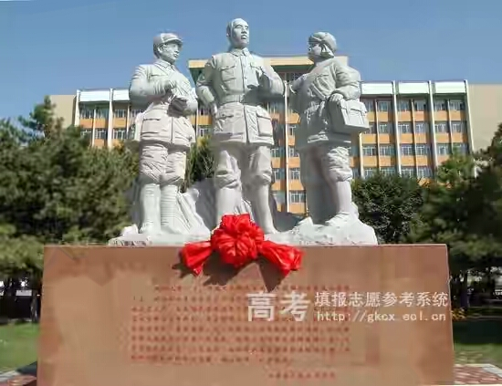 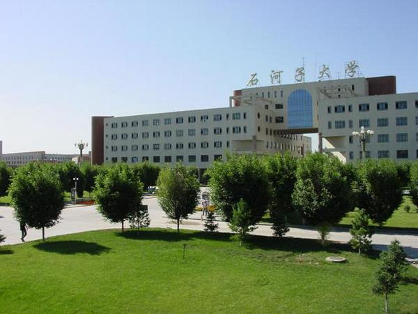 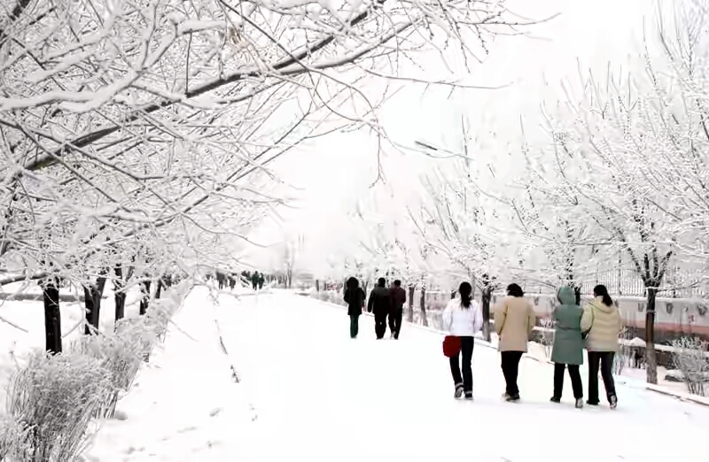
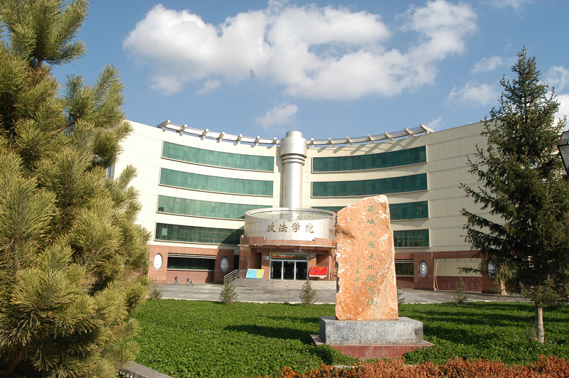 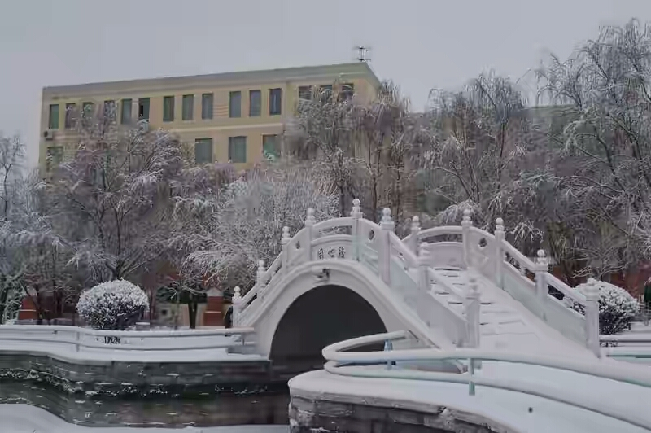 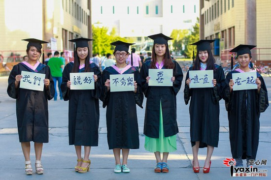
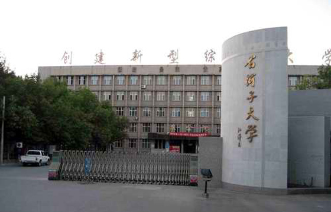 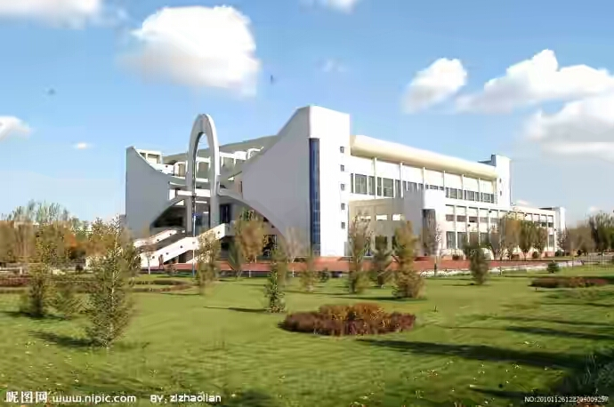